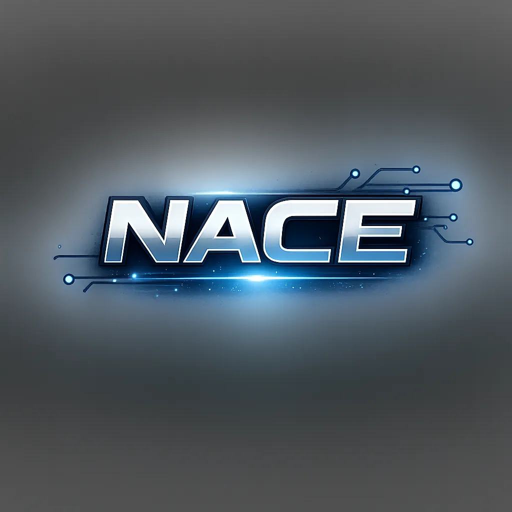
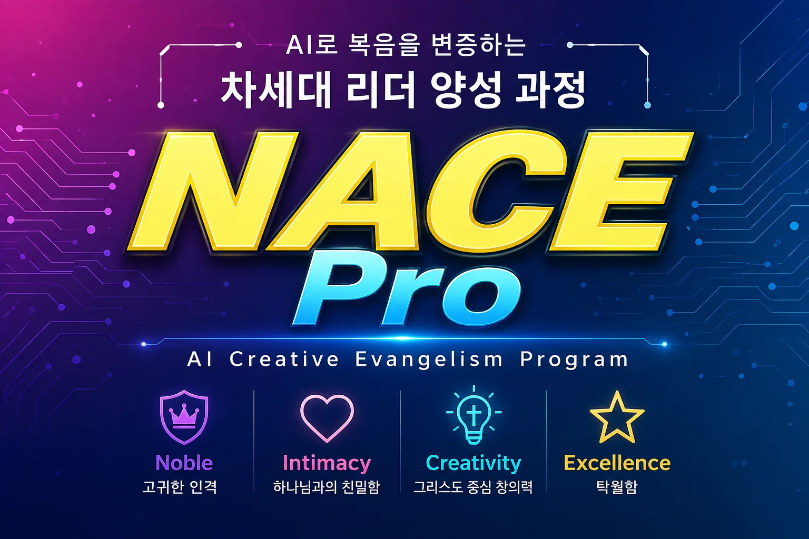
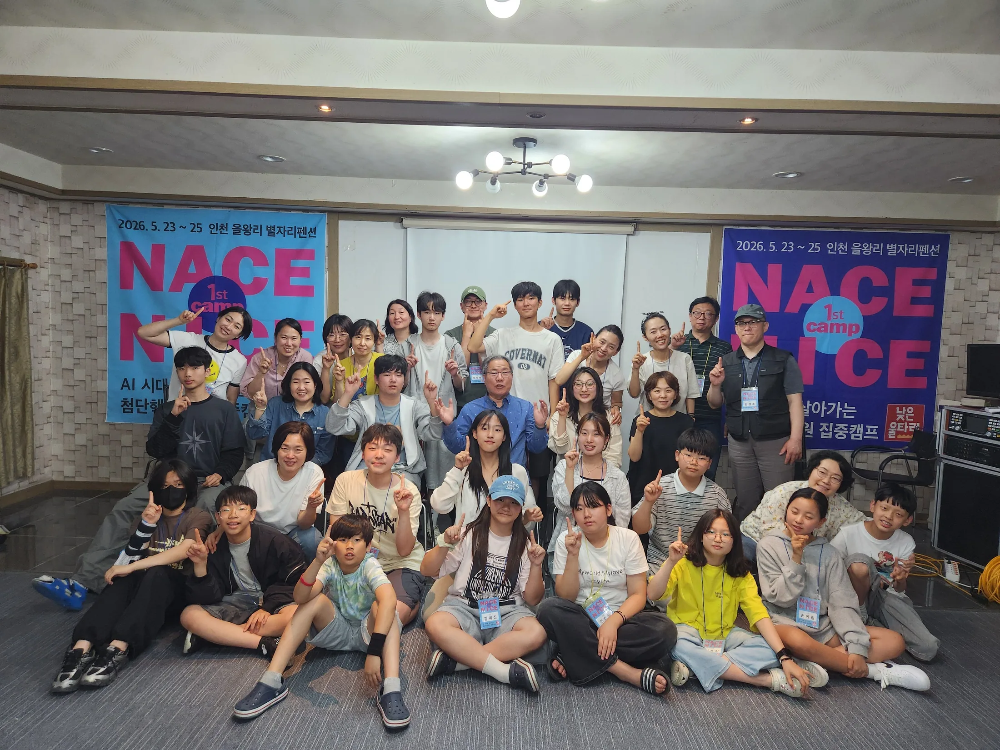
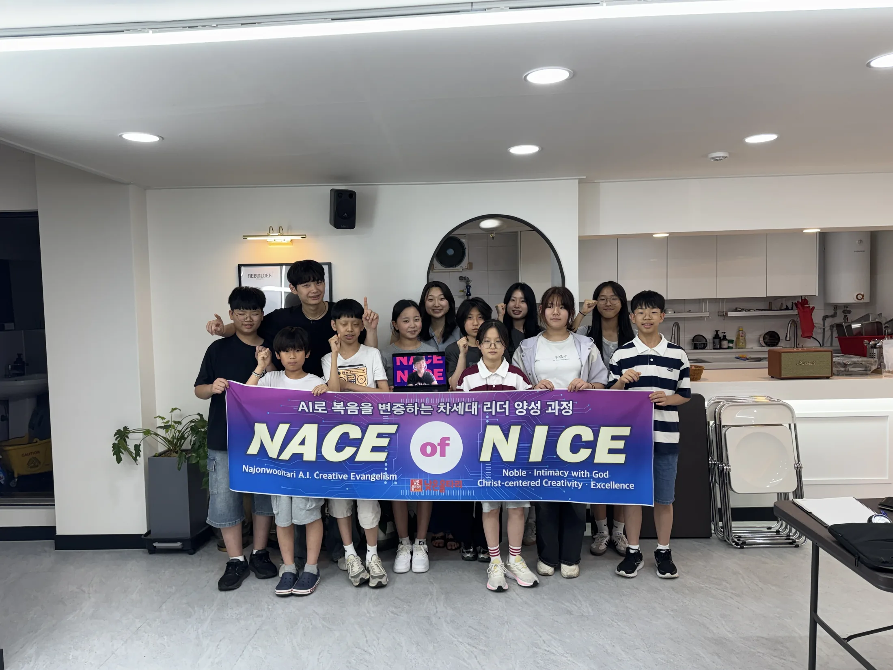

OUR TEAM
NACE
AI로 복음을 변증하는 우리의 일
- NNajonwooltari흔들리지 않는 신앙 공동체이자 영적 기반인 낮은울타리
- AA.I.시대를 읽고 다음세대와 소통하는 필수 기술
- CCreativity뻔하지 않은 아이디어로 사람들의 마음을 울리는 능력
- EEvangelism우리가 만든 것으로 복음을 변증하는 사역

NACE of NICE 참여 문의NAJONWOOLTARI A.I. CREATIVE EVANGELISM
AI로 복음을 배우고, 설명하고,
콘텐츠로 만드는 다음세대 실전 교육 프로그램
초등 고학년~고등학생 · 매주 토요일 · Zoom 및 서울 현장
다음 세대가 복음을 전하는 방식
01 / IDENTITY
지역을 넘어 연결된 다음 세대가 AI로 복음을 표현합니다. 기술을 배우는 데서 멈추지 않고 하나님과 가까이 걷고, 서로의 재능을 연결하며, 맡겨진 결과를 끝까지 책임집니다.
AI로 복음을 변증하는 우리의 일
우리가 가지고 있는 정신
02 / WHY NOW
지식에서 지혜로정답을 빨리 얻는 법보다 좋은 질문을 만들고 분별하는 힘을 기릅니다.
성과에서 정체성으로비교와 성취가 아니라 하나님의 형상으로 지음 받은 존재의 가치를 배웁니다.
고립에서 공동체로혼자 돋보이는 결과보다 서로의 은사를 연결해 한 팀의 작품을 만듭니다.
직업에서 소명으로기술을 목적이 아닌 도구로 사용해 세상 속에서 복음을 살아냅니다.
엔비디아 젠슨 황은 AI가 역사상 가장 사용하기 쉬운 소프트웨어가 되고 있다고 설명했습니다. 최태원 SK 회장은 AI 시대에 생각·공감·적응·신체 역량이라는 ‘4가지 근육’을 갖춘 제너럴리스트가 필요하다고 강조합니다.
03 / GROWTH PATH
성경적 기준을 세우고, AI를 이해하고, 실제 콘텐츠를 만들며, 사람 앞에서 설명하고 나눕니다.
성경적 세계관과 디지털 윤리를 바탕으로 무엇을 왜 만들지 질문합니다.
생성형 AI의 원리, 한계, 저작권과 책임 있는 사용법을 익힙니다.
기획·글·이미지·영상 도구를 연결해 팀 프로젝트를 완성합니다.
작품의 메시지를 발표하고 피드백을 반영해 복음을 상대방의 언어로 전합니다.
04 / TOGETHER
매주 Zoom에서 연결되고 서울에서는 얼굴을 마주합니다. 캠프에서는 2박 3일 동안 더 깊이 배우고 하나의 작품을 완성합니다.



학생 보호 원칙: 보호자 동의를 받은 활동 자료만 사용하며, 학생 이름·화면명·상세 위치정보는 공개하지 않습니다.
05 / STUDENT WORKS
웨스트민스터 소요리문답을 오늘의 말과 영상으로 풀어내는 웨민소 작업에 NACE 팀이 함께합니다.

공개된 웨민소 콘텐츠를 YouTube에서 확인하세요.
보호자 동의와 저작권 확인이 끝난 작품부터 순차 공개합니다.
NACE 공식 YouTube 채널 개설 후 완성 작품을 연결합니다.
06 / ABOUT US
NACE는 낮은울타리의 신앙 공동체 안에서 시대를 읽고, 다음세대가 AI를 책임 있게 사용하도록 돕는 교육 사역입니다.
복음과 회복, 문화 사역을 통해 다음세대가 세상 속에서 그리스도인으로 살아가도록 돕습니다.
NACE Pro 교육과 NACE 팀의 정규 모임, 학생 프로젝트를 지도합니다.
010-4850-3422학생 참여, 교회·기관 협력, 프로그램 운영 문의를 받습니다.
nwmoravian4@gmail.com07 / JOIN
궁금해하고, 함께 배우고, 내가 만든 것을 나누고 싶은 마음이면 충분합니다.
임서연 간사 · 010-4850-3422
nwmoravian4@gmail.com